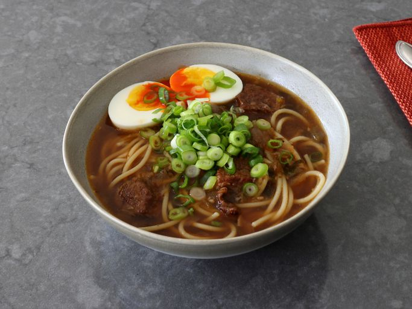

Yakamein

Description
- Prep Time: 20 mins
- Cook Time: 1 hr 20 mins
- Stand Time: 20 mins
- Total Time: 2 hrs
- Servings: 4
Ingredients:
- 1 1/2 pounds beef chuck roast, cut into 1-inch pieces
- 1 1/2 teaspoons kosher salt
- 1 teaspoon freshly ground black pepper
- 1/2 teaspoon cayenne pepper, or to taste
- 1/2 teaspoon paprika
- 2 tablespoons avocado oil or vegetable oil
- 1 cup chopped yellow onion
- 1/2 cup diced celery
- 1/2 cup diced green pepper
- 4 cloves garlic, minced
- 2 tablespoons soy sauce
- 1 1/2 teaspoons Worcestershire sauce
- 1 1/2 teaspoons granulated garlic
- 8 cups water
- 2 tablespoons beef bouillon paste
- 12 ounces dry spaghetti
- 4 large hard boiled eggs, peeled and halved
- 1 cup sliced green onions